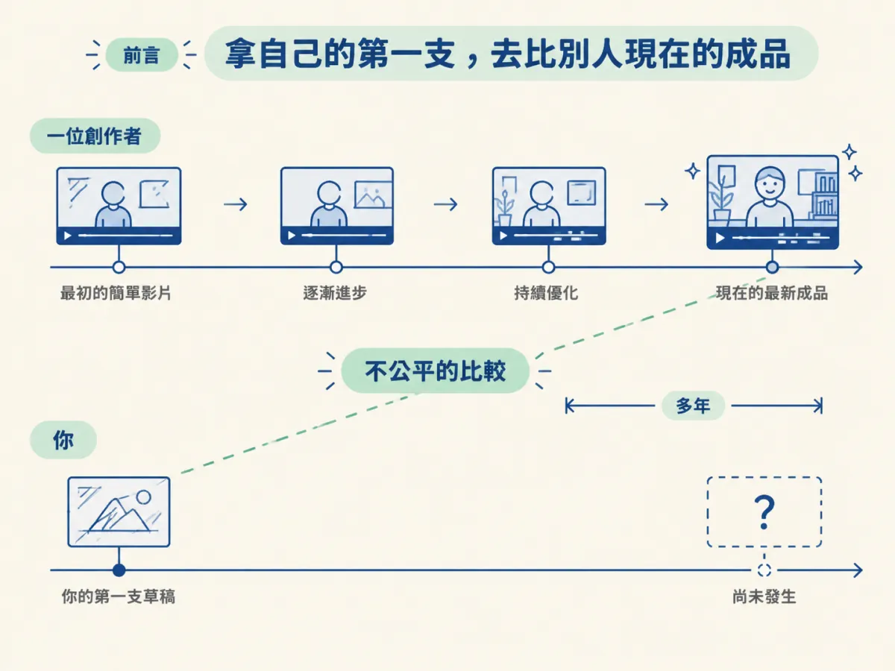
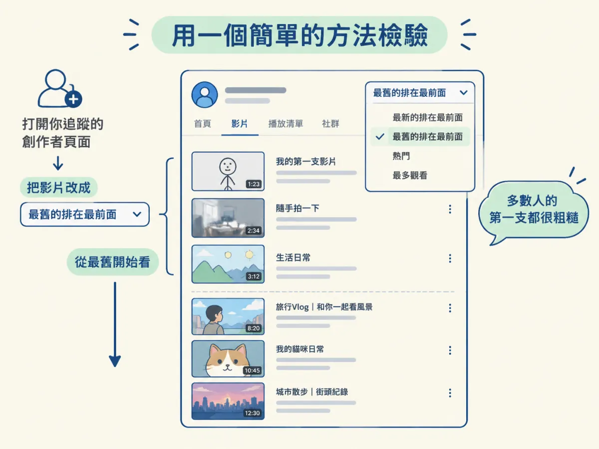

你能說出「要先達到某種品質才能發」為什麼是一個迷思，並會用「查看成功創作者最早作品」的方法，自己檢驗這個迷思。
上一步我們看到，品質那一端常常擋住體量。那麼這道擋住你的品質門檻，到底是真的，還是自己想像出來的？
想像一個很常見的畫面：你打開追蹤的一位創作者頁面，看到的是他最新的一支影片，畫面精緻、剪輯流暢，於是你心想「我怎麼可能做到這樣」，然後把自己的草稿收起來。這裡的問題在於，你拿的是自己的第一支作品，去跟別人現在的成品比。比較的雙方，一個站在起點，一個站在多年之後。

課程舉了三個例子，每個都是從最早期的影片開始看起。
Chris Williamson在商業 podcast 領域名列前茅，約有 440 萬訂閱。他最早的一支影片，是在辦公室會議室裡和朋友的一段對談。後來的影片也不是在錄音棚裡錄的，而是在一間公寓裡，那間公寓大概在倫敦。
MrBeast被認為是現在最大的創作者之一。他投入影片創作約十四年，最早的公開影片是一支 2012 年的 Minecraft 遊戲片段。
Jay 自己，也就是這門課的作者，最早上傳到 YouTube 的是一支約兩分鐘的影片，標題是「讓 ChatGPT 快十倍的五秒小技巧」。他在 TikTok 最舊的影片，則是把手機對著電腦螢幕，講他在網路上找到的 AI 內容。
三個人的起點都很陽春，後來卻各自累積出觀眾。這就是課程想讓你看見的事：成功者的開頭，常常和你以為的「成品水準」差很遠。
你不必相信別人說的話，自己就能查證。打開一個你追蹤的創作者頁面，把影片改成「最舊的排在最前面」，然後看前幾支影片的樣子。你會發現，多數人的第一支作品都比你想像的粗糙。

課程也點出一個更直接的判斷：要找一個一開始就有成品水準的創作者，反而比找一個起點粗糙的人還難。所以「先要有好品質才能開始」這個想法，跟大多數人的實際經歷對不上。
要注意，這裡的迷思是「不需要一開始就達到成品水準」，不是「品質完全不重要」。課程很快就會補上另一半：品質的要求會隨著追蹤數上升，等你的觀眾變多，就要開始留意。下一步會把這條門檻的曲線畫清楚。
如果把上一步的蹺蹺板拿來對照，這個迷思就是把品質那一端壓得過重的重量。你覺得必須先做到某個水準，於是品質那頭一直往下沉，體量那頭就一直翹不起來。拆掉這個重量，體量才有機會上來。
「要先達到某種品質才能發」是新手最常見的迷思。檢驗的方法很簡單：看看你追蹤的創作者最早的作品。多數人的起點都很粗糙，而他們後來的成績，是在那些粗糙的作品之後累積出來的。這個迷思被拆掉，品質的要求才會回到正確的位置。